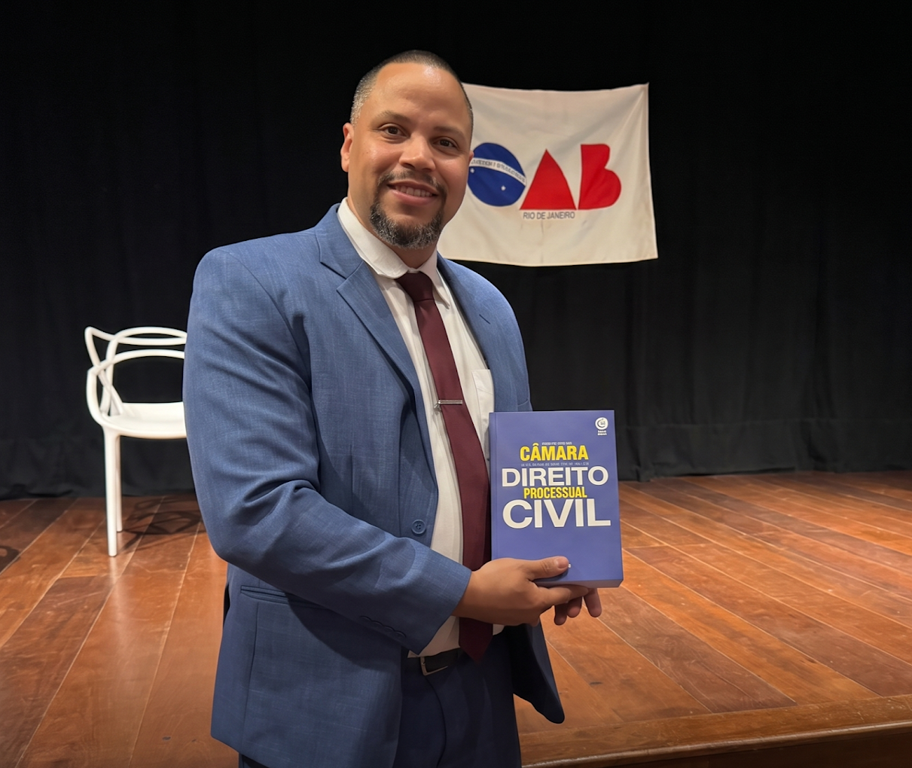

Atuação exclusiva em Direito Penal. Do plantão 24h em casos de urgência à defesa técnica em inquéritos e processos. Presença institucional e preparo para proteger seus direitos.
Atendimento com sigilo absoluto. OAB/RJ 186.397.
Inscrição 186.397
Ciências Penais
OAB Paraty
Plantão para urgências
Defesa técnica para momentos que exigem respostas rápidas e estratégia.
Atendimento imediato para garantir que os direitos do preso sejam respeitados na primeira audiência.
Medidas urgentes para cessar prisões ilegais ou abusivas, com atuação rápida nos tribunais.
Acompanhamento desde a investigação até a sentença, com sigilo e estratégia processual.
Atuação em tribunais, audiências e sustentações orais, com foco em direito penal e processual penal.
Dr. Marcos Tavares é advogado criminalista em Paraty, pós-graduado em Ciências Penais e dedicado exclusivamente à defesa criminal na Comarca e região.
Vice-Presidente da OAB Paraty e Presidente da Comissão de Segurança Pública, alia a prática forense à atuação institucional em prol da advocacia e da sociedade.

Pelo WhatsApp, você fala diretamente com a equipe da defesa.
Avaliamos a situação e orientamos sobre os próximos passos e prazos.
Definimos a medida cabível, seja cautelar, habeas corpus ou defesa processual.
Atuamos em audiências, tribunais e sustentações orais, com transparência.
Em situações de urgência, cada minuto importa. O atendimento imediato é essencial para garantir a integridade da defesa.
Falar com a Defesa AgoraSim. A presença de um advogado na audiência de custódia é fundamental para garantir que os direitos do preso sejam respeitados e para verificar a legalidade da prisão.
Sim. O escritório mantém plantão 24h para situações de urgência, como prisões em flagrante e audiências de custódia.
O primeiro passo é uma conversa para entender os fatos. A partir disso, o advogado avalia as medidas cabíveis e orienta sobre os próximos passos, sempre com sigilo absoluto.
O plantão é voltado para atendimentos de urgência, como prisões em flagrante e audiências de custódia. Para casos que não exigem atendimento imediato, o agendamento é feito em horário comercial.
Sim. O contato inicial e a análise de urgência podem ser feitos pelo WhatsApp. Para casos que exigem atuação presencial, o advogado se desloca conforme a necessidade.
Entre em contato para uma orientação inicial e saiba como podemos atuar no seu caso.
(24) 99957-3060
Galeria Jorge Rodrigues, Rua Dr. Derli Elena, 292, Sala 07, Patitiba, Paraty-RJ, 23970-000
Entraremos em contato em breve pelo WhatsApp informado.